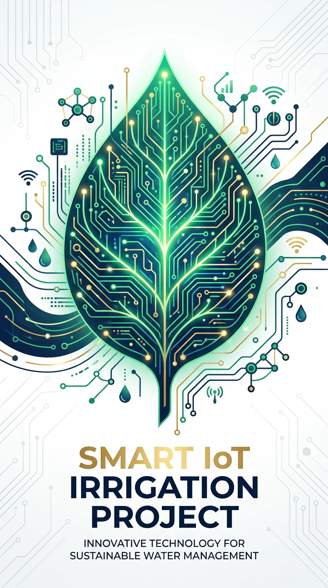
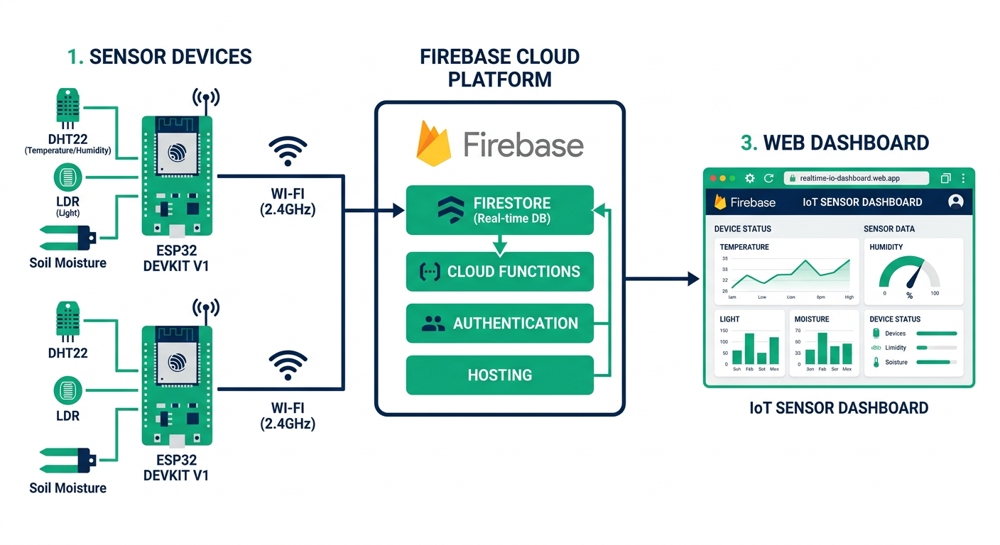

A complete three-tier IoT irrigation system: ESP32 sensors, Firebase cloud, AI vision, and a single-file web dashboard — built for under ₹1,890.

Urban families forget to water plants. We built a smart garden that knows soil moisture, tank level, weather, and plant health — then acts automatically. ESP32 brain + 5 sensors + ESP32-CAM eye. Firebase cloud. Web app with Gemini AI and live weather. The big win: we fixed a 10-second pump glitch by bundling 17 network calls into 2. Zero reboots since.

Data flows: HTTPS JSON every second. All thresholds persist in NVS flash.
We used a 5 V / 2 A adapter (not USB-PD — PD lacks handshake chip, outputs ~0 mA). 1000 µF capacitor absorbs spikes. 1N4007 flyback diode kills pump inductive spikes. Relay isolates pump electrically.
The AUTO pump clicked ON/OFF every ~10 s. Root cause: 17 blocking Firebase HTTPS calls per second → network stall → 8 s watchdog reboot → loop.
/sensors (10 metrics) + 1 read of /controls (9 keys) per second. ~85% less latency, zero reboots.4 APIs: OpenWeatherMap, crop.health (Plant.id), Google Gemini 2.5 Flash, OpenRouter. All on free tiers.
| Category | INR |
|---|---|
| Electronics | 1,320 |
| Power & protection | 220 |
| Mechanical | 350 |
| Total | ≈ 1,890 |
Project Verde proves that a ₹1,890 student build can operate like a funded startup product. We documented every failure honestly — because credibility beats perfection. The plant waters itself. The AI explains why. And the judges see a system that actually works.